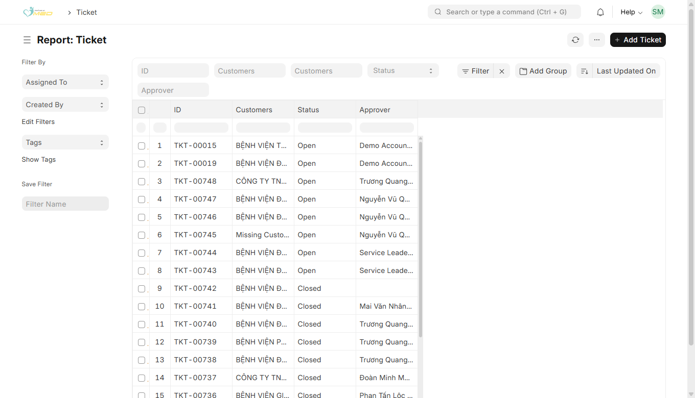
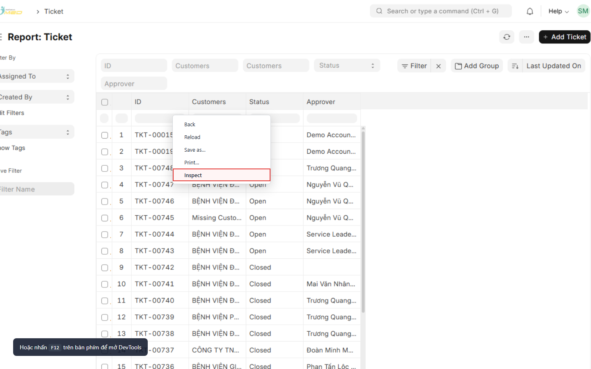
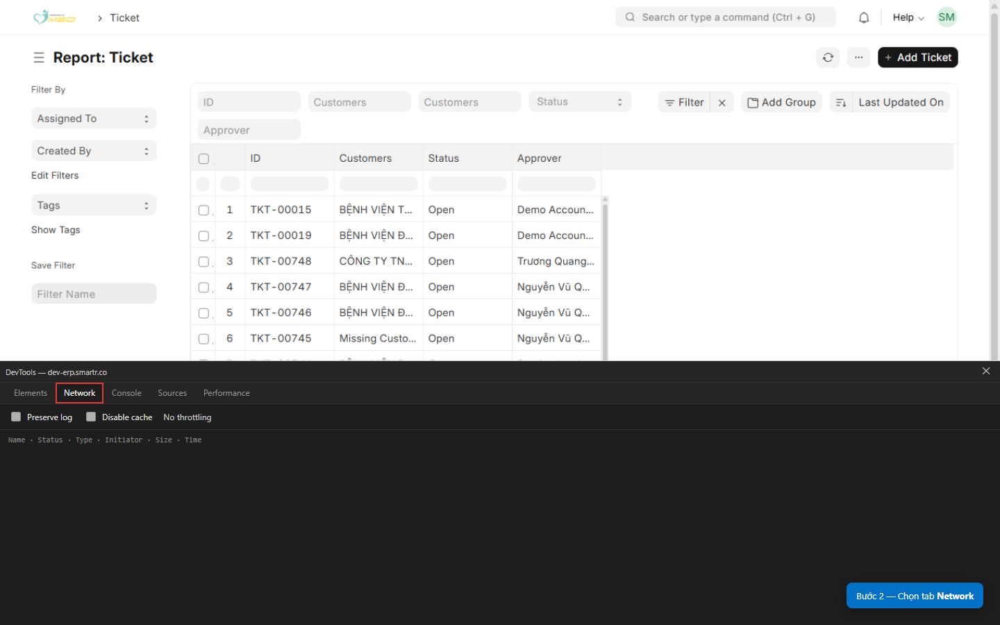
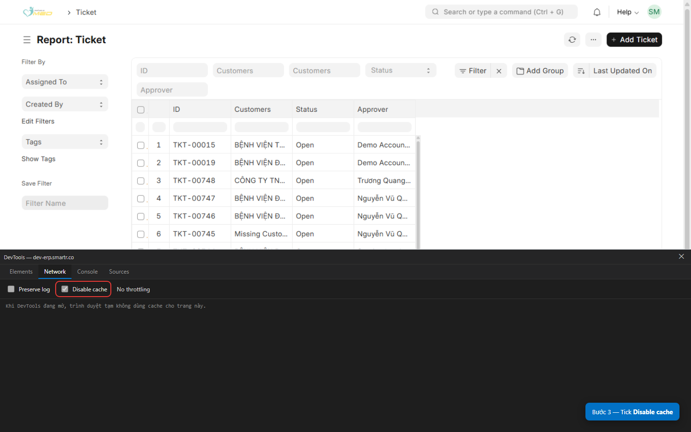
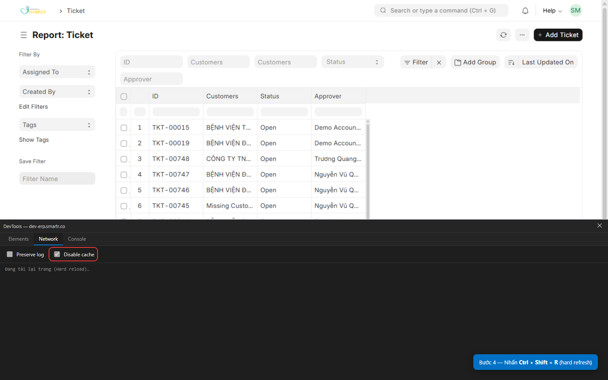
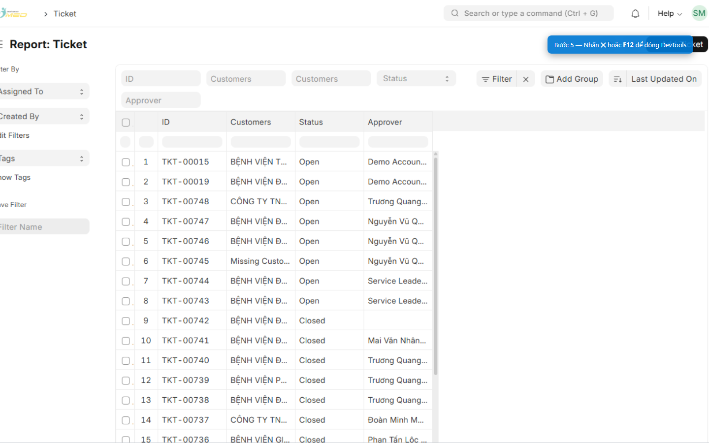

Các bước (trên trang ERP đang làm việc)
Bước 1 — Mở DevTools
Chọn một trong hai cách:
- Nhấn phím F12 trên bàn phím; hoặc
- Nhấn chuột phải lên vùng trống trên trang → chọn Inspect (tiếng Anh) hoặc Kiểm tra (Microsoft Edge tiếng Việt).


Bước 2 — Chuyển sang tab Network
Trên thanh tab của DevTools, nhấn Network (Mạng).

Bước 3 — Bật Disable cache
Trên thanh công cụ của tab Network, tick vào ô Disable cache (Tắt bộ nhớ đệm).

Bước 4 — Hard refresh trang ERP
Click vào vùng trang ERP (phía trên DevTools), rồi nhấn tổ hợp phím Ctrl + Shift + R.
Trên Mac, dùng Cmd + Shift + R.

Bước 5 — Đóng DevTools
Nhấn nút Close (✕) góc DevTools, hoặc nhấn lại F12.

Xử lý sự cố
| Triệu chứng | Cách xử lý |
|---|---|
| Không thấy tab Network | Mở rộng DevTools (kéo mép panel) hoặc nhấn » / dấu ⋮ → More tools → Network |
| Disable cache bị xám / không tick được | Đảm bảo DevTools vẫn mở; thử tắt chế độ Docked thu nhỏ |
| Ctrl+Shift+R không đổi giao diện | Thử đóng tab ERP và mở lại; hoặc đăng xuất → đăng nhập lại sau khi IT xác nhận đã clear-cache server |
| Chỉ một máy bị lệch | Lặp lại 5 bước trên; kiểm tra không dùng proxy/extension chặn JS |